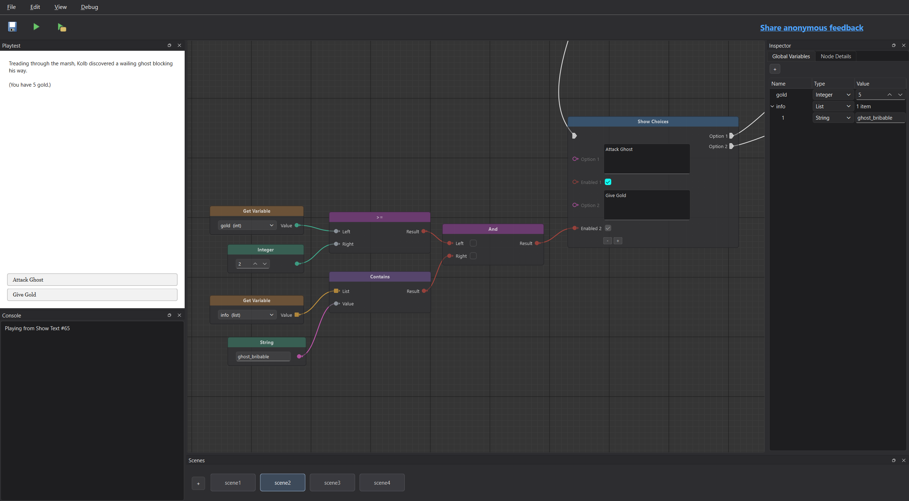

FEATURED / 我的节点引擎
Loom.
把故事的每一种可能，连成看得见的路线。
这是我做的节点式互动叙事引擎。把剧情、选择和条件放到画布上，用连线组织故事走向；一边写，一边在编辑器里试玩。
- 连接剧情节点，安排不同的分支
- 让文字和选项随玩家的状态变化
- 导出独立的 Windows 游戏，分享给别人玩

PLAYER & GAME MAKER
你好，我是 KingBob34。
爱打游戏，爱游戏开发。
01 / SELECTED WORK
FEATURED / 我的节点引擎
把故事的每一种可能，连成看得见的路线。
这是我做的节点式互动叙事引擎。把剧情、选择和条件放到画布上，用连线组织故事走向；一边写，一边在编辑器里试玩。

等待连接 GitHub 主页。
02 / A LITTLE ABOUT ME
我是 KingBob34，爱打游戏，也爱游戏开发。这里记录我做过的项目和折腾过的想法。Loom 是其中一个：用节点把故事连起来，让剧情分支和玩家的选择看得更清楚。
LET’S CONNECT